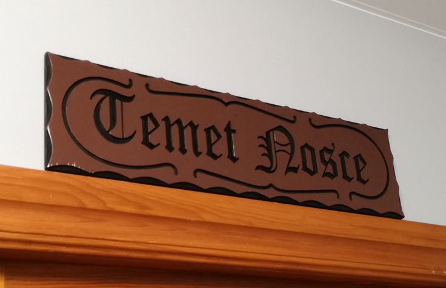
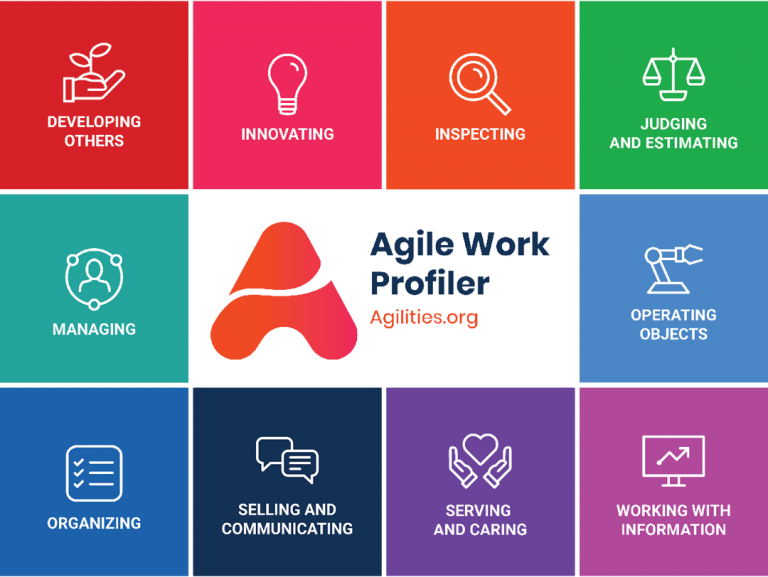
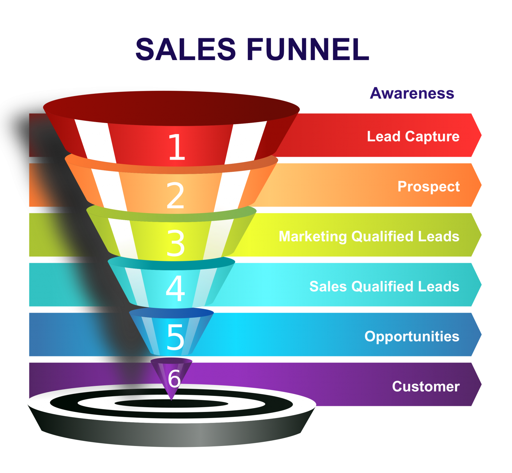

So You Want To
|
 |
John Riley
Principal Agile Coach and Trainer
|
### About John Riley
---
:10
Exercise: What do you THINK you need in order to succeed in an IT career ?
### Surprising facts of IT careers
---
### English Language Arts
---
Technical Writer
Product Manager
Business Analyst
UI/UX Designer
Compliance Specialist
Marketing Specialist
Corporate Communications Manager
Content Strategist
SEO Specialist
Social Media Manager
Instructional Designer
Customer Success Manager
HR Specialist
Sales Engineer
Accessibility Specialist
### Mathematics
---
Data Scientist
Machine Learning Engineer
Data Analyst
Quantitative Analyst
Statistician
Software Engineer
Systems Analyst
Database Administrator (DBA)
DevOps Engineer
Cloud Architect
Cybersecurity Analyst
Financial Analyst
Network Engineer
Operations Research Analyst
Business Intelligence Analyst
### Science
---
Data Scientist
Machine Learning Engineer
Bioinformatics Analyst
Environmental Scientist
Systems Biologist
IT Research Scientist
Clinical Data Manager
Forensic Analyst
Quality Assurance Engineer
Pharmaceutical Data Analyst
Health Informatics Specialist
Research Scientist in AI
Robotics Engineer
Data Engineer
Systems Administrator
### Social Studies
---
Business Analyst
Product Manager
Market Research Analyst
Project Coordinator
Policy Analyst
Human Resources Manager
Corporate Social Responsibility (CSR) Manager
Compliance Officer
Customer Success Manager
Community Manager
Training Specialist
Education Technology Specialist
Social Media Analyst
Government IT Specialist
International Relations Consultant
### Health
---
Health Informatics Specialist
Clinical Data Manager
EHR Implementation Specialist
Healthcare Data Analyst
Biomedical Engineer
Telehealth Coordinator
Quality Assurance Analyst in Healthcare
Patient Experience Manager
Health Policy Analyst
Pharmaceutical Data Analyst
Risk Management Analyst
Health Systems Administrator
Clinical Research Coordinator
Data Privacy Officer
Health Information Manager
### Physical Education
---
Fitness App Developer
Health and Wellness Coach
Sport Data Analyst
Rehabilitation Technology Specialist
Sports Performance Analyst
Exercise Scientist
Biomechanics Engineer
Sports Nutritionist
Physical Therapy Assistant
Community Recreation Director
Health IT Specialist
Fitness Program Coordinator
Sports Software Developer
Data Analyst for Sports Organizations
Youth Sports Coach with Tech Focus
:10
Exercise: Where would you start your journey?
### Final thoughts
---
It starts with YOU!

Find your agilities

Follow this simple rule
### left and right with caption
---
left

### Thank you!
---
Access this presentation

 https://www.linkedin.com/in/johril
https://www.linkedin.com/in/johril